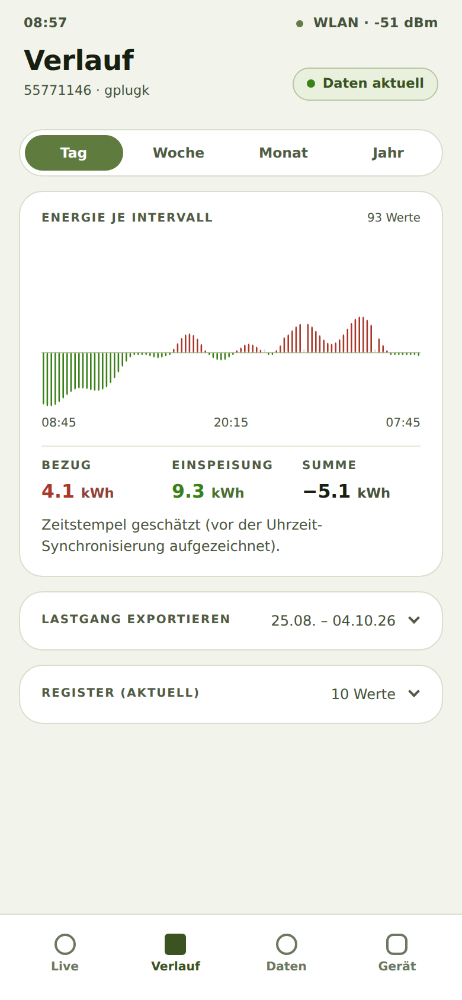
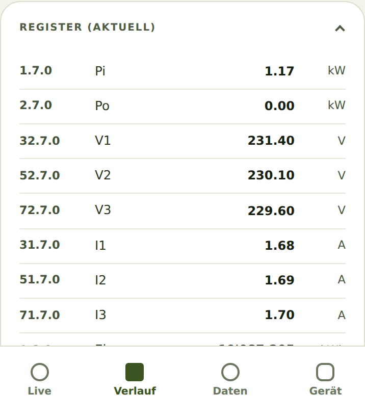
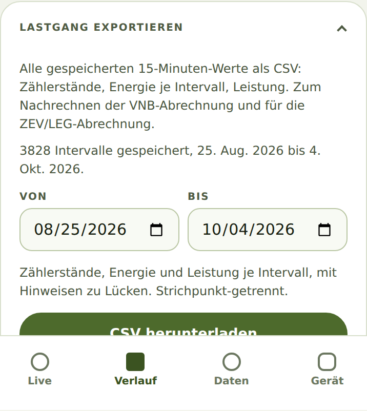
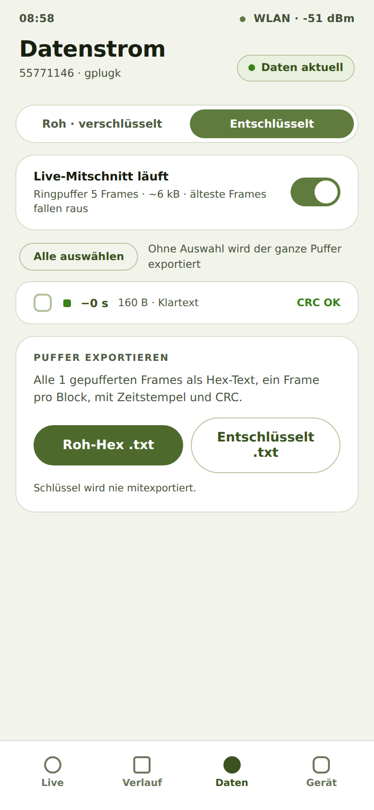

Als Besitzer eines gPlug möchte ich sehen, wie viel Energie ich über einen Tag, eine Woche, einen
Monat oder ein Jahr bezogen und eingespeist habe, damit ich Zeiträume vergleichen kann.
So geht's
Tippen Sie unten auf Verlauf.
Wählen Sie oben den Zeitraum: Tag, Woche, Monat oder
Jahr.
Die Grafik Energie je Intervall zeigt Bezug nach oben und Einspeisung nach unten. Darunter
stehen die Summen Bezug, Einspeisung und Summe.

Verlauf eines Tages mit Summen
Tippen Sie auf Register (aktuell), um alle aktuellen Werte des Zählers mit ihrem OBIS-Code zu sehen.

Liste der aktuellen Register
Woran Sie erkennen, dass es geklappt hat
Jeder Zeitraum zeigt eine Grafik und die drei Summen.
Summe ist Bezug minus Einspeisung.
Hinweise
Der gPlug speichert alle 15 Minuten einen Wert. Er hält etwa ein Jahr und behält ihn auch bei
einem Neustart oder Firmware-Update.
Zeitstempel geschätzt (vor der Uhrzeit-Synchronisierung aufgezeichnet). erscheint, wenn Werte aufgezeichnet wurden, bevor der gPlug die Uhrzeit aus dem
Internet hatte.
Geprüft mit dem Gerätesimulator am 30. September 2026.
Als Besitzer eines gPlug möchte ich die gespeicherten 15-Minuten-Werte als Datei herunterladen, damit
ich die Stromrechnung prüfen oder in einem Zusammenschluss zum Eigenverbrauch abrechnen kann.
So geht's
Tippen Sie auf Verlauf und öffnen Sie die Karte Lastgang exportieren. Die Zeile zeigt schon
geschlossen, welcher Zeitraum gespeichert ist.
Wählen Sie Von und Bis.
Tippen Sie auf CSV herunterladen.

Lastgang exportieren
Woran Sie erkennen, dass es geklappt hat
Der Browser speichert eine CSV-Datei mit Zählerständen, Energie und Leistung je 15 Minuten,
getrennt durch Semikolon.
Liegt Von nach Bis, erscheint „Von“ muss vor „Bis“ liegen. und es wird nichts heruntergeladen.
Hinweise
Alles exportieren, auch Intervalle ohne Zeitstempel nimmt auch Intervalle ohne Zeitstempel mit.
Geprüft mit dem Gerätesimulator am 30. September 2026.
Als technisch interessierter Besitzer eines gPlug möchte ich die Daten sehen, die der Zähler
tatsächlich sendet, damit ich bei einem Problem zeigen kann, was ankommt.
So geht's
Tippen Sie unten auf Daten. Sie sehen die letzten Frames mit Uhrzeit und
CRC OK oder CRC FAIL.
Oben wählen Sie die Ansicht: bei verschlüsselten Zählern Roh · verschlüsselt oder
Entschlüsselt, bei DSMR-Zählern Hex oder Klartext.
Mit dem Schalter Live-Mitschnitt läuft halten Sie die Anzeige an, um in Ruhe zu lesen; der gPlug zeichnet
weiter auf.
Tippen Sie auf einen Frame, um ihn zu öffnen; dort gibt es Kopieren und Frame als .txt.
Markieren Sie Frames oder tippen Sie auf Alle auswählen und laden Sie sie in der Karte
Auswahl exportieren herunter.

Datenstrom mit den letzten Frames
Woran Sie erkennen, dass es geklappt hat
Ein kopierter oder gespeicherter Frame enthält die Bytes als Hex-Text mit Zeitstempel und CRC.
Hinweise
Schlüssel wird nie mitexportiert.
Geprüft mit dem Gerätesimulator am 30. September 2026.